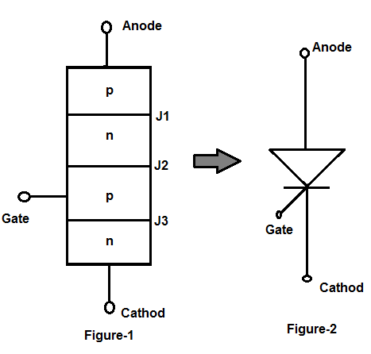
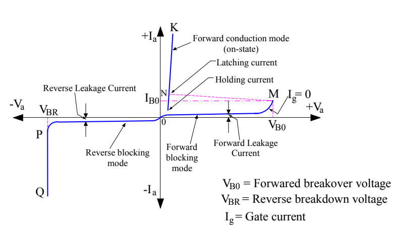

V-I Characteristics of SCR
Aim
To study the V-I characteristics of an SCR. Plot the voltage and current on a graph for forward and reverse bias and determine the breakover voltage, holding current and latching current.
Theory
Thyristors also called as SCR’s (Silicon Controlled Rectifiers) are one of the most popular power electronics devices. A thyristor is a four-layer semiconductor device of PNPN structure with three p-n junctions. It has three terminals: anode, cathode, and gate.
Construction
The SCR is a four layer and three terminal device. The four layers made of P and N layers, are arranged alternately such that they form three junctions J1, J2 and J3. These junctions are either alloyed or diffused based on the type of construction.
The SCR is a four layer and three terminal device. The four layers made of P and N layers, are arranged alternately such that they form three junctions J1, J2 and J3. These junctions are either alloyed or diffused based on the type of construction.
To manufacture the SCR, three types of constructions are used, namely the planar type, Mesa type and Press pack type. For low power SCRs, planar construction is used where all the junctions in an SCR are diffused. In mesa type construction, junction J2 is formed by diffusion method and thereby outer layers are alloyed to it.
This construction is mainly used for high power Silicon Controlled Rectifiers. To provide high mechanical strength, the SCR is braced with plates made up of either molybdenum or tungsten. And one of these plates is soldered to a copper stud which is further threaded to connect the heat sink.
Working
When the anode voltage is made positive with respect to the cathode, the junctions J1 and J3 are forward biased. The junction J2 is reverse biased, and only a small leakage current flows from anode to cathode. The thyristor is then said to be in the forward blocking, or off-state, condition and the leakage current is known as off-state current ID. If the anode-to-cathode voltage VAK is increased to a sufficiently large value, the reverse-biased junction J2 breaks. This is known as avalanche breakdown and the corresponding voltage is called forward breakdown voltage VBO.
Because the other junctions J1 and J3 are forward biased, there is free movement of carriers across all three junctions, resulting in a large forward anode current. The device is then in a conducting state, or on-state.
In the on-state, the anode current is limited by an external impedance or a resistance, RL. The anode current must be more than a value known as latching current, IL to maintain the required amount of carrier flow across the junction; otherwise, the device reverts to the blocking condition as the anode-to-cathode voltage is reduced. Latching current IL is the minimum anode current required to maintain the thyristor in the on-state immediately after a thyristor has been turned on and the gate signal has been removed.

Once a thyristor conducts, it behaves like a conducting diode and there is no control over the device. The device continues to conduct because there is no depletion layer on the junction J2 due to free movements of carriers. However, if the forward anode current is reduced below a level known as the holding current IH, a depletion region develops around junction J2 due to the reduced number of carriers and the thyristor is in the blocking state. The holding current is on the order of milliamperes and is less than the latching current IL. That is, IL>IH. Holding current IH is the minimum anode current to maintain the thyristor in the on-state. The holding current is less than the latching current.
When the cathode voltage is positive with respect to the anode, the junction J2 is forward biased however, junctions J1 and J3 are reverse biased. This is like two series-connected diodes with reverse voltage across them. The thyristor is in the reverse blocking state and a reverse leakage current, known as reverse current IR, flows through the device. A thyristor can be turned on by increasing the forward voltage VAK beyond VBO, but such a turn-on could be destructive. In practice, the forward voltage is maintained below VBO and the thyristor is turned on by applying a positive voltage between its gate and cathode.